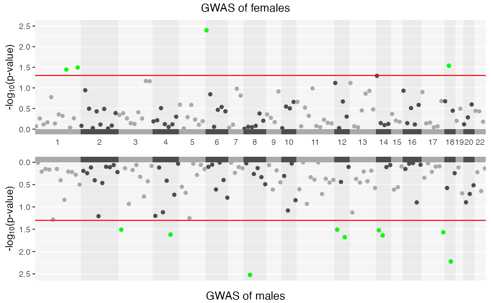

Miami plot
GXWASmiami.RdThis function generates Miami plots for GWAS and XWAS.
Usage
GXWASmiami(
ResultDir = tempdir(),
FemaleWAS,
MaleWAS,
snp_pval = 1e-08,
Xchr = FALSE
)Arguments
- ResultDir
Character string for the folder path where the outputs will be saved.
- FemaleWAS
R dataframe of summary statistics of GWAS or XWAS of female samples with four columns, SNP(Variant), CHR(Chromosome number), POS(Base pair position) and pvalue(P-value of the test). This can be generated by running FM01comb or FM02comb model with GXWAS function.
- MaleWAS
R dataframe of summary statistics of GWAS or XWAS of male samples with four columns, SNP(Variant), CHR(Chromosome number), POS(Base pair position) and pvalue(P-value of the test). This can be generated by running FM01comb or FM02comb model with GXWAS function.
- snp_pval
Numeric value as p-value threshold for annotation. SNPs below this p-value will be annotated on the plot. The default is 1e-08.
- Xchr
Boolean value,
TRUEorFALSE, specifying whether to generate Miami plot for stratified XWAS or not. The default isTRUE.
Examples
data("GXwasRData")
FemaleWAS <- na.omit(Ffile[, c("SNP", "CHR", "BP", "P")])
colnames(FemaleWAS) <- c("SNP", "CHR", "POS", "pvalue")
MaleWAS <- na.omit(Mfile[, c("SNP", "CHR", "BP", "P")])
colnames(MaleWAS) <- c("SNP", "CHR", "POS", "pvalue")
GXWASmiami(FemaleWAS = FemaleWAS, MaleWAS = MaleWAS, snp_pval = 0.05)
#> • Generating Miami plots for stratified test.
#> ℹ Saving plot to /var/folders/d6/gtwl3_017sj4pp14fbfcbqjh0000gp/T//Rtmp9Evg3L/Stratified_GWAS.png

#> ✔ Miami plot of stratified GWAS is saved in /var/folders/d6/gtwl3_017sj4pp14fbfcbqjh0000gp/T//Rtmp9Evg3L